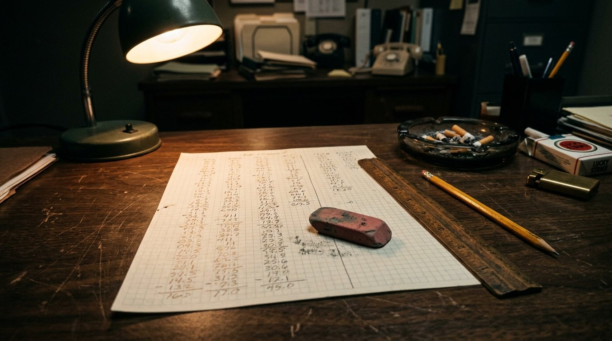
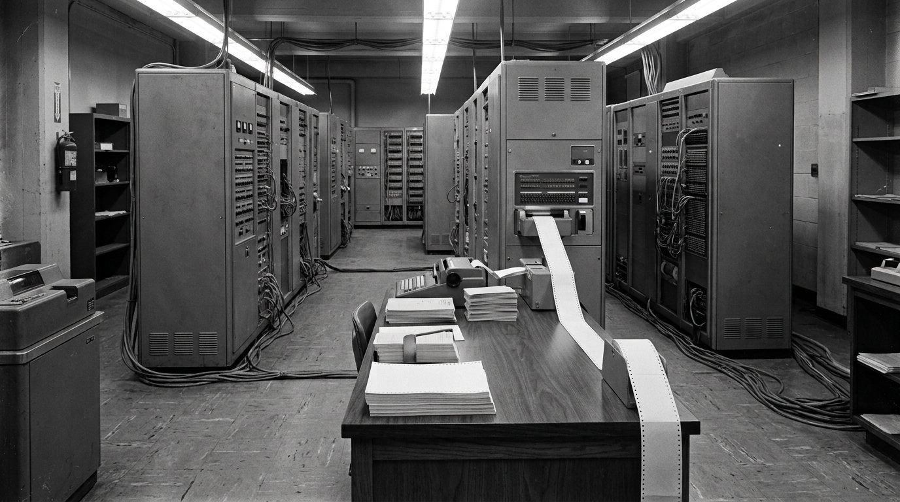

O compilador
De 1949 a 1959. O episódio anterior terminou perguntando: por que a própria máquina não traduz, se traduzir também é uma tarefa? Este responde. Quando o áudio pedir, aperte Próximo.
O que ainda incomodava. A ordem já morava na memória, junto com os números. Mas escrever essa ordem era escrever binário na mão, instrução por instrução: falar com a máquina era falar a língua dela.

Escrever em binário
Cada instrução é um número, cada endereço é um número. Trocar uma ordem de lugar muda todos os endereços depois dela. E um dígito errado no meio não avisa nada: só dá resultado errado.
O assembler
Uma palavra curta no lugar do número da instrução, um nome no lugar do endereço. É a primeira vez que a máquina faz trabalho pra quem escreve. Mas uma palavra ainda vira uma instrução: pensar continua todo com a pessoa.
Se traduzir é uma tarefa

Traduzir tem passo a passo. E qualquer coisa com passo a passo, esta etapa já mostrou, a máquina faz. Então a pessoa escreve numa língua confortável pra ela, e a máquina se vira pra chegar na dela.
O A-0

Um programa que montava outro programa: uma lista de chamadas, cada uma apontando pra uma rotina pronta guardada em fita, e ele juntava tudo naquela ordem. A máquina passou a gerar programa, não só a executar.
"Máquina não escreve programa"
FORTRAN
Nasceu pra cálculo científico e nasceu com uma obsessão declarada: gerar código tão eficiente quanto o escrito à mão, senão ninguém trocaria.
COBOL
O programa deixa de ser da máquina
E o trabalho de programar deixa de ser trabalho de eletrônica.
Uma camada nova no meio
Quando dá errado, agora tem mais de um lugar pra procurar. E o tradutor também é um programa, com os próprios defeitos. Valeu mesmo assim: o que se ganha em quem consegue programar é maior do que o que se perde em controle.
1959
A próxima etapa é sobre ela encolher.